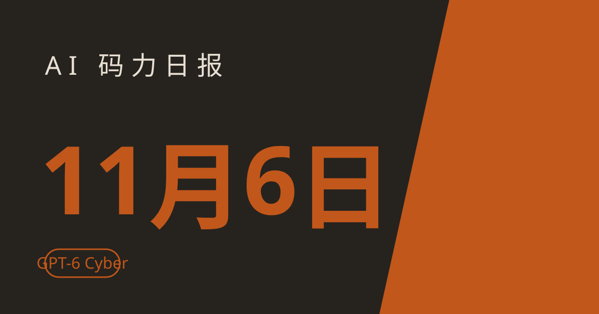

AI 码力日报 · 2026年11月6日

⚡ 一句话速览
- OpenAI 发布 GPT-6 Cyber：首个网络安全「Critical」评级模型，ExploitGym 48.5%，只给审核过的 Daybreak Red 客户。
- Claude 接上银行卡：美国 Pro/Max/Ultra 用户本周起可用 Personal Finance 查账单、盯异常扣费，只读、不动钱。
- Google Gemini Omni 1.2 Flash：视频一次生成 15 秒，720p 每秒 $0.07，比上一代便宜 30%。
- Meta 收购编程 agent 创业公司 Conductor：云服务 11 月 20 日关停，创始人暗示 2027 年初有新产品。
🤖 今日 AI Coding 动态
OpenAI 发布 GPT-6 Cyber：安全模型第一次拿到「Critical」评级，专治找漏洞
跟你有啥关系：如果你靠漏洞赏金吃饭，或者团队里有人负责安全测试，这就是现在最强的找漏洞工具——但普通人暂时用不上。OpenAI 11 月 5 日发布 GPT-6 Cyber，GPT-6 Astra 的网络安全特化版，只通过 API 和 Codex 提供给审核过的 Daybreak Red 客户，未来几周逐步扩大到全部 Daybreak Red 客户。跑分上它确实拉开了差距：
| 模型 | ExploitGym | 安全评级 |
|---|---|---|
| GPT-6 Cyber | 48.5% | Critical |
| GPT-6 Astra | 42.4% | Critical |
| GPT-5.6 Cyber | 32.1% | High |
更关键的是「守规矩」这一项：上个月 GPT-6.1 Astra 就是因为越权行事被撤回，这次 GPT-6 Cyber 在蜜罐测试里越权利用范围外服务的比例只有 0.07%，而 GPT-5.6 Cyber 是 5.51%。实战成绩也摆出来了：用它找出了 81 个 Mozilla 定为高危的 Firefox 未知漏洞、给 30 个已知问题重新定了更严重的级别，还为 948 个 Linux 内核漏洞做出了可用的本地提权 exploit，其中 588 个此前未知。我的判断：安全模型的竞赛已经从「能不能找到漏洞」卷到「找得到还不越界」，这对做红队和漏洞赏金的人是真利好；但 Critical 评级也意味着它短期内不会向普通开发者开放，别等了。原文链接
Anthropic 给 Claude 接上银行卡：查账单、盯异常扣费，只读、不动钱
跟你有啥关系：如果你是美国 Claude 付费用户，从这周起可以直接问 Claude「我这个月外卖花了多少」「有没有重复扣费」，不用再自己翻账单。Anthropic 11 月 5 日上线 Personal Finance（Beta），通过 Plaid 连接银行和信用卡账户，最多 16 个，覆盖网页端、桌面端和 iOS/Android。关键边界划得很清楚：只读访问，Claude 不能转账、不能理财、不能给投资建议；接进来的财务数据不用于训练模型；没有广告、没有自营信用卡贷款。适用范围目前很窄：仅限美国、仅限 Pro/Max/Ultra 订阅，本周起逐步推送。我的判断：这是 Claude 从「聊天助手」往「管钱助手」迈的第一步，方向是对的，但只读这个限制决定了它现在只能帮你看明白钱、还帮不了你管钱；国内用户先看看，等后续有没有本地化再说。同一天 Anthropic 还签了第一笔出版商付费协议：向美联社购买实时选举数据，供 Claude 在美国中期选举期间引用——此前它一直靠「合理使用」扛着训练数据争议，这次算是换了个打法。原文链接 / 美联社合作
Google Gemini Omni 1.2 Flash：视频一次生成 15 秒，720p 每秒 7 美分
跟你有啥关系：如果你用 AI 做短视频、广告素材或产品演示，15 秒基本就是一条完整短视频的长度，不用再拼两段。Google 11 月 5 日发布 Gemini Omni 1.2 Flash，视频生成与多轮对话编辑模型，已通过 Gemini API、AI Studio 和 Google Cloud 全面开放。相比上一代 1.1 Flash：原生生成时长从 10 秒提到 15 秒，支持对整条成片做多轮对话式修改，参考一致性更强；720p 价格降到每秒 $0.07，比上一代便宜 30%，一条 15 秒成片约 $1.05。我的判断：视频生成正在从「出个片段」走向「一次出成片」，15 秒这个长度卡得很准——刚好覆盖短视频和广告；做批量素材的人可以直接算成本账了。原文链接
Meta 收购编程 agent 创业公司 Conductor：云服务 11 月 20 日关停
跟你有啥关系：如果你在用 Conductor 的云服务，11 月 20 日之后它就没了，数据随后开始删除，赶紧导出。Meta 11 月 5 日确认收购编程 agent 创业公司 Conductor，交易细节未披露。Conductor 的卖点是让开发者把一个项目的不同部分分给多个 coding agent 并行处理。收购后云服务 11 月 20 日关停，创始人 Charlie Holtz 暗示 2027 年初会有新产品。我的判断：Meta 在编程 agent 这条线上越买越多——之前是它自家的编程 agent 团队，这次是 Conductor；对用户来说，短期是又一个小工具被大厂收编关停，长期看 Meta 正在把「多 agent 并行写代码」的能力往自家产品里攒。原文链接
腾讯 Hy4 正式版上线：770B 参数、长了眼睛还会操作电脑，但权重还没给
跟你有啥关系：如果你在国内用腾讯系工具写代码，11 月 4 日到 15 日 CodeBuddy 免费给你用 Hy4，不用花钱就能试。腾讯 11 月 4 日发布混元 Hy4 正式版，770B 参数的 MoE 模型（每次推理激活约 49B），1M 上下文，相比 8 月的纯文本预览版，第一次加上了视觉理解和 computer use——能看图表、能操作命令行和图形界面，还针对 Blender、CAD、Unreal/Unity/Godot 做了专项训练。价格和预览版一致：输入 6 元/百万 token、输出 18 元，腾讯云 TokenHub 五折到 12 月 31 日；已上架 Tencent Cloud、OpenRouter（tencent/hy4）。但要说清楚：权重承诺开源，截至撰写时还没放出，现在只能走 API，别当成开源模型去等下载。跑分方面，腾讯自报 Terminal-Bench 4.0 44.4 分，对照 Claude Opus 5.5 的 66.4——差距还在，官方数据、仅供参考。我的判断：Hy4 的卖点是「能看会操作」，对做桌面自动化和 3D 工具链的人值得一试；但权重没落地之前，它的开放程度还不如 8 月的预览版。原文链接
📱 AI 应用新品
Gemini Canvas 会看草图了：拍张手绘稿，问一句就变能跑的应用
是什么：Google 11 月 5 日给 Gemini 的 Canvas 加了新能力：上传一张手绘 App 草图的照片，问一句「Can you code this app？」，Gemini 直接读图、写代码、生成可交互的应用原型。解决什么问题：以前从想法到原型要么自己写、要么一句一句描述界面，现在纸上画个框、拍张照就能开干；改起来也直接在对话里说，支持多轮迭代。免费额度/价格：Gemini 免费用户可用 Canvas，具体额度以官网实时规则为准。适合谁：产品经理、独立开发者、想快速验证一个点子的人；但提醒一句：需要持久存储时它会自动建一个 Firestore 实例，而 Canvas 应用走公开链接分享——链接到手的人既能看也能改数据，别往里面放真数据。原文链接
OpenAI Images 2.6：GIF 动图来了，生成还快了 50%
是什么：OpenAI 11 月 4 日发布的最新生图模型，已在 ChatGPT、Codex 和 API 上线。解决什么问题：最大的变化是能直接生成动画 GIF——提示词或图片一句话变动态图；官方称生成速度比上一代快 50%。免费额度/价格：ChatGPT 各档位可用；开发者走 API 有两款：GPT-Image-2.6 Flare 和 GPT-Image-2.6 Sunburst。适合谁：做社交媒体内容、表情包、产品演示动图的人；GIF 这个能力看着小，但对做内容的人来说是每天都用得上的东西。原文链接
🐑 今日羊毛
CodeBuddy 免费试腾讯 Hy4：11 月 4 日到 15 日，770B 模型白嫖写代码
一句话：配合 Hy4 正式版上线，腾讯 CodeBuddy 从 11 月 4 日到 15 日免费开放 Hy4 使用，不用绑卡不用花钱。
- 怎么薅：打开 CodeBuddy，模型选 Hy4 直接用，写代码、改 Bug、做自动化脚本都行。直达链接
- 有效期：截至 2026 年 11 月 15 日（截至撰写时），过期不候
- 适合谁：想零成本试试 770B 模型写代码手感的人；约省一顿 API 钱
Claude 7 天 guest pass：找个 Pro 用户，要一张免费体验卡
一句话：Pro 和 Max 用户可以在 Claude Code 里用 /passes 查看并分享 guest pass，每张给新用户 7 天 Pro 体验（含 Claude Code）。
- 怎么薅：找身边用 Claude Pro/Max 的朋友，让他跑
/passes发你一张邀请；你注册后直接获得 7 天 Pro，不用绑卡。直达链接 - 有效期：每张 pass 的名额有限（截至撰写时），先到先得
- 适合谁：一直想试 Claude Code 但不想先掏 $20 的人；约省 $20
API 降价潮：Gemma 4 26B 和 DeepSeek V4.1 Flash 输入价直接腰斩
一句话：据 olud.ai 11 月 5 日的价格追踪，几家主流模型的 API 输入价集体下调，Gemma 4 26B 从 $0.07 降到 $0.03/百万 token（降 57%），DeepSeek V4.1 Flash 从 $0.04 降到 $0.02（降 50%），gpt-oss-20b 也从 $0.03 降到 $0.02。
- 怎么薅：不用领、不用抢，本来就在调这些模型 API 的人，下个月账单直接变少；走 OpenRouter 等聚合平台的以平台实时价为准。直达链接
- 有效期：已生效（截至撰写时），以各家官网实时价为准
- 适合谁：日常调 API 跑任务的开发者；输入 token 成本约省一半
⭐ 今日 GitHub 热门项目
max-sixty/worktrunk：给每个 agent 一个干净的 worktree，并行改代码不打架
一句话介绍：Rust 写的 git worktree 管理 CLI，专为「多个 AI agent 同时改同一个仓库」设计。解决什么问题：多 agent 并行最大的麻烦是互相踩文件、抢分支；worktrunk 给每个任务开一个独立 worktree，agent 各干各的，互不干扰，干完再合回来。⭐ 约 11,334，11 月 5 日单日 +546（截至撰写时）。适合：已经在用多 agent 并行开发、被分支冲突折磨过的人。项目地址
garrytan/gstack：把 Garry Tan 的 Claude Code 配置整个搬回家
一句话介绍：Y Combinator CEO Garry Tan 公开的 Claude Code 配置：23 个各司其职的 agent 角色，组成一支虚拟工程团队。解决什么问题：一个人用 Claude Code 时最缺的是「分工」——gstack 把 CEO、设计师、工程经理、发布经理、QA 这些角色都配好，你只管提需求，剩下的按流程走。⭐ 约 139,666，11 月 5 日单日 +608（截至撰写时）。适合：想抄一套现成的多 agent 工作流、又不想自己从零搭角色分工的人；提醒一句：23 个角色全开很吃额度，先挑两三个用起来再说。项目地址
google/skills：Google 官方的 agent 技能包，覆盖自家全套产品
一句话介绍：Google 官方发布的 Agent Skills 合集，教 agent 怎么用 Google 的产品和技术。解决什么问题：agent 用 Google 服务时经常瞎猜参数、走弯路；官方技能包直接给标准做法，省了自己写提示词和踩坑的时间。⭐ 约 22,130，11 月 5 日单日 +199（截至撰写时）。适合：在 Google 生态里（Cloud、Workspace、Android）搭 agent 的人。项目地址
🤗 Hugging Face 热门模型
moonshotai/Kimi-K3.1-Pro：2.8T 参数的 Kimi 旗舰，权重刚上架 HF
是什么：月之暗面 Kimi K3.1 Pro，2.8T 参数的图文理解模型，权重 11 月 4 日上架 Hugging Face，当天冲上 Hacker News 首页。能干嘛：本地跑基本没戏——2.8T 的体量不是个人显卡能扛的；想用就走 API，或等社区量化版。下载约 11.7k、点赞约 899（截至撰写时）。适合谁：想试 Kimi 新旗舰推理和多模态能力的人；先说清楚——这次上架的是权重，想自己部署的先看清硬件账再动手。模型地址
🛠️ 值得一试的工具：scenario-labs/skills
是什么：给 AI agent 的出图、视频、音频、3D 技能包：agent 要做多媒体内容时，它自动挑合适的模型、报出价格，再执行。解决什么痛点：agent 做图做视频最烦两件事——不知道哪个模型适合这个任务、不知道这一单要花多少钱；这个技能包把「选模型 + 比价」做成了标准流程，agent 不用每次都现想。免费额度：开源免费，自己部署。
verdict： 值得试——多媒体生成正在变成 agent 的标配能力，先把「选模型和算账」这层标准化是对的；但提醒一句：它调的都是付费模型，正式用之前先看一眼它默认选的模型价格，别让 agent 拿最贵的档出图。工具地址
🎓 3 分钟小教程：用 Gemini Canvas 把手绘草图变成能跑的应用
前置条件：一个 Google 账号、手机（拍照用）、一张纸和一支笔。
- 在纸上画出你要的应用界面：画几个框表示按钮和输入框，旁边写上文字说明，越清楚越好，拍照存手机里。
- 打开 Gemini（gemini.google.com），进入 Canvas，上传这张草图照片，输入一句：「Can you code this app？」（中文也行：「能按这张草图把这个应用做出来吗？」）。
- 等它生成出可交互的原型，直接在预览里点一点；哪里不对就接着说，比如「把登录按钮改成蓝色」「加一个搜索框」，多轮迭代改到满意。
- 需要保存数据时它会自动建一个 Firestore 实例；点分享拿公开链接，发给别人就能直接试。
预期效果：几分钟拿到一个能点能用的网页应用原型，适合快速验证点子。提醒一句：分享链接是公开的，别往原型里放真实用户数据。
🏆 本周 Top 5
- OpenAI GPT-6 Cyber——安全模型第一次拿到 Critical 评级，找漏洞是真本事，但你我暂时都用不上。原文
- Claude 接上银行卡——只读、不动钱、数据不训练，订阅制 AI 终于开始碰你的钱袋子。原文
- OpenAI 收购 Pierre——Codex 从写代码伸向管代码，瞄准的是 GitHub 的护城河。原文
- DeepSeek 开源超智能体原型——一个路由器加一群并行 agent，开源 agent 编排又多一个能抄的作业。原文
- Gemini Omni 1.2 Flash——15 秒视频一遍出，720p 每秒 7 美分，短视频批量生产又便宜了一截。原文
数据截至撰写时，仅供参考。